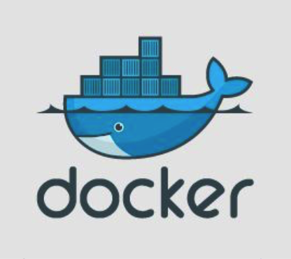
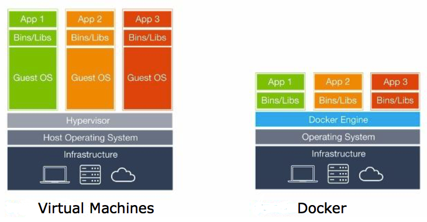
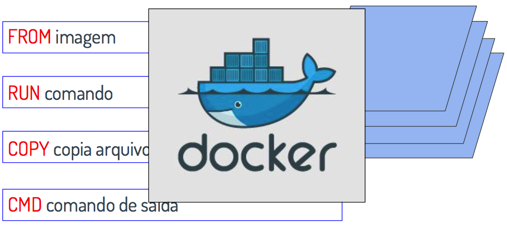
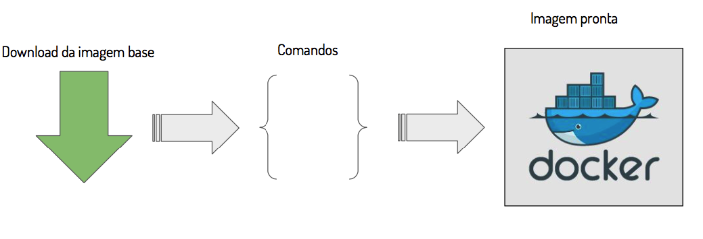
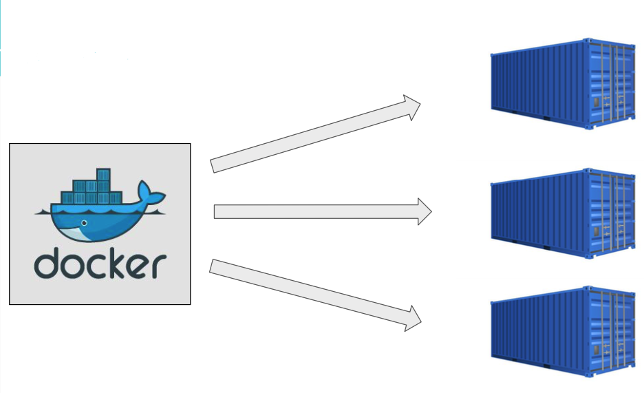
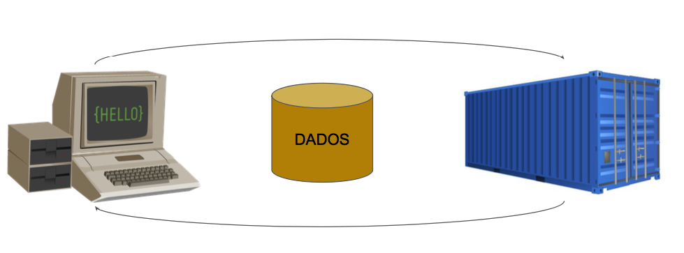
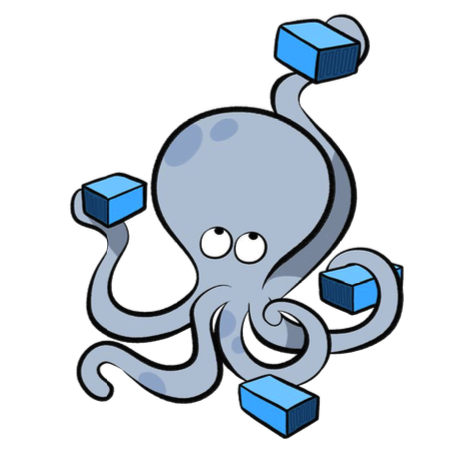

Usando Docker num projeto legado Rails
Anna Cruz
Motivações
Definição de projeto legado
Na minha máquina funciona
- Desenvolvedores são preguiçosos
- Ambiente de desenvolvimento != Ambiente de produção
Que tal aproximarmos o desenvolvimento de produção e diminuir problemas?
Conceitos Docker
Dockerfile, build, containers, orquestração, etc
Docker tem diferença de VM!
Como se constrói uma imagem docker
E o build?
Essa parada de containers?
E volumes?
Com o que orquestrar isso tudo?
Como ficou o Dockerfile?
Dockerfile da aplicação
FROM ruby:2.3.3
RUN apt-get update -qq && \\
apt-get install -y apt-transport-https && \\
apt-get install -y -qq build-essential ruby-dev libpq-dev && \\
nodejs sendmail
COPY . /opt/app/
WORKDIR /opt/app/
RUN bundle install
CMD rails s
EXPOSE 3000
Dockerfile do servidor de emails fake
FROM ruby:2.3.3
RUN gem install mailcatcher
CMD mailcatcher --ip 0.0.0.0 --foreground
E o compose?
version: '2'
services:
web:
build: .
command:
rails s -p 3000 -b 0.0.0.0 -e development
volumes:
- .:/app/sealevel
ports:
- "80:3000"
networks:
- backend
mailcatcher:
build:
context: .
dockerfile: Dockerfile-mailcatcher
ports:
- 8080:1080
networks:
- backend
networks:
backend:
driver: bridge
Tá mas sério mesmo que precisava disso?
Precisar não precisava, mas...
- Ambientes parecidos
- Aplicação como um pacote completo
- Fácil de replicar e padronizar
Queria agradecer especialmente a:
Obrigada!
Anna Cruz
 @yuizinha
@yuizinha
 anna.cruz@gmail.com
anna.cruz@gmail.com
 /annacruz
/annacruz